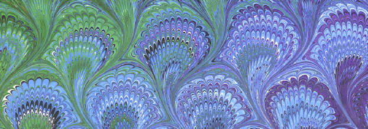
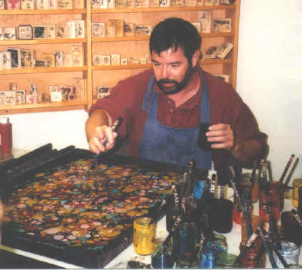

What is Marbling?
Hello -- I'm Galen Berry, one of the few professional marblers in the country. I started marbling in 1985, and have been doing it as a full-time occupation for nearly 30 years now. Marbling is the art of printing multi-colored swirled or stone-like patterns on paper or fabric. The patterns are formed by first floating the colors on the surface of a liquid, and then laying the paper or fabric onto the colors to absorb them. Marbling is sometimes still called by its original Turkish name, ebru. Marbling is a lot more popular now than it has ever been before in its 1000-year history, and far more so than it was back when I first got interested and tried to learn this ancient art. There were hardly any decent books or classes available then, especially not deep down in Mississippi, my home state. I had to go search through the Rare Book Rooms at the U. C. Berkeley Library and the New York City Public Library for days, looking through ancient volumes full of arcane recipes for mixing such exotic ingredients as Irish moss seaweed, spirits of green soap, and distilled bile from the gall bladder of an ox (no kidding.) Trying to follow these archaic instructions, I naturally had dreadful results for months, and wasted huge amounts of paper, paint, and time, not to mention oxgall. But after about six months of experimenting, I finally started getting some respectable sheets, or at least I thought they were at the time (when I look at them now, I think they're pretty poor stuff). But I could tell I was at least getting somewhere though, so I kept on trying. Soon, the papers were piling up, so I decided I'd better start doing something with them, such as making money. When the two largest art supply stores in San Francisco started buying them from me by the hundreds, I realized this could actually go somewhere, and eventually I dumped the boring computer job I had, and I've been splashing around the marbling tank ever since. I soon started teaching marbling workshops, and have now taught the joy of marbling to more than 4000 people in 30 states. I definitely recommend taking a 1- or 2-day workshop if you're interested in marbling -- you'll save money for sure, instead of wasting lots of paint and supplies, weeks of time, and getting frustrated too. However, if you're good at following directions, there are finally several good books out there on the technique of marbling, so you'll have it a lot easier than I did if you can't find a local class to take, or if you like to be self-taught. I've written a booklet, "The Art of Marbling", which teaches you all you need to know to produce some really professional-looking papers. I also make some beginning marbling kits which contains everything you need to learn marbling, except the paints (you can buy whichever colors you want separately) -- see the Marbling Supplies page on this website.

